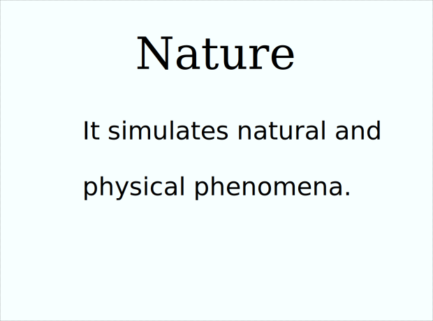

Art of Code
It uses code, image data, and sound sources to create various worlds and scenes. I use a variety of generation methods, including pre-defined methods and methods that change in real time.
I use various programming languages such as TypeScript, JavaScript, C++, Rust, GLSL, and HLSL.
Please refer to theAbout Page for more details.
